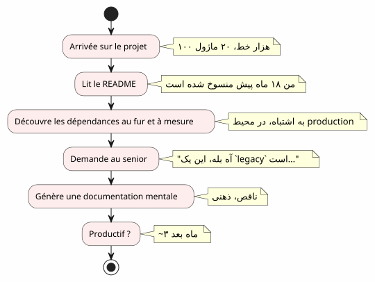
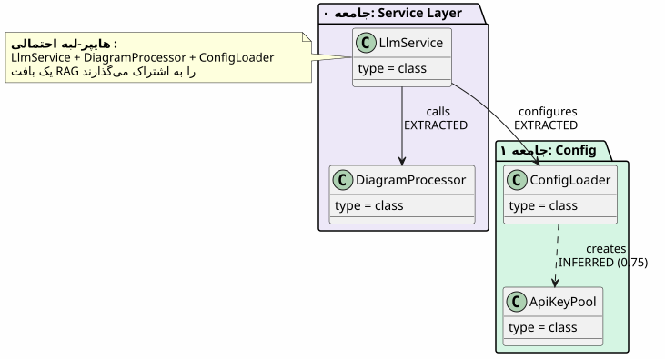
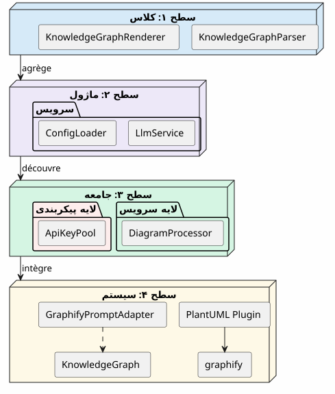
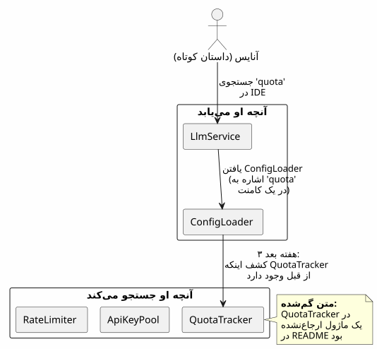
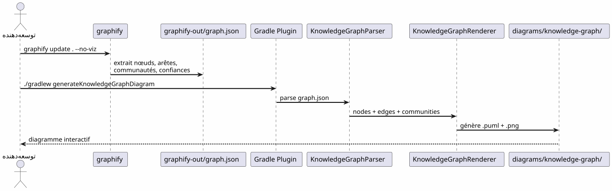
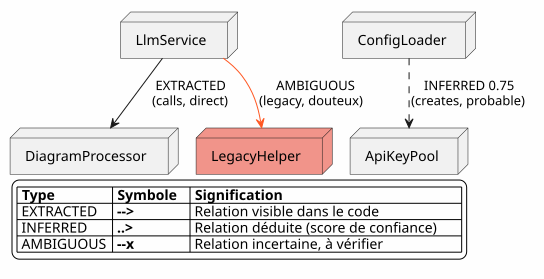
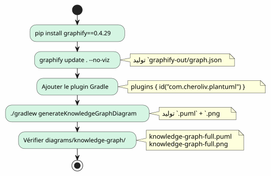
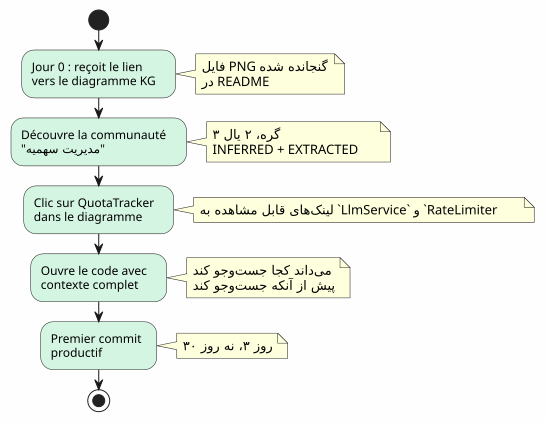
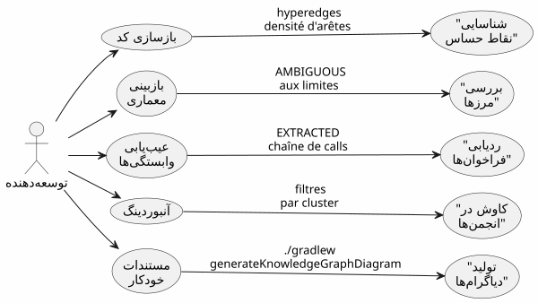

گراف دانش (Knowledge Graph) به عنوان ابزاری برای درک codebase
منتشر شده در 20 April 2027
شما به یک پروژه با ۱۰۰٬۰۰۰ خط میرسید. بیست ماژول، صد کلاس، وابستگیهای نامرئی، تاریخچهٔ ريفکتورینگهای فراموششده. README از معماری «microservices» خبر میدهد اما کد چیز دیگری میگوید. چقدر زمان لازم است تا بتوانید کارآمد شوید؟سه ماه— اگر شانس داشته باشید. و اگر یک نقشه تعاملی از کد، بهطور خودکار تولید شده، میتواند این را به سه روز کاهش دهد؟
- تیک
-
[]
دیوار اونبورдинگ
هر توسعهدهنده این صحنه را تجربه کرده است:
-
روز ۱ : ما به شما README را نشان میدهیم (آخرین بهروزرسانی : ۱۸ ماه پیش)
-
روز 3 : متوجه میشوید که ماژول`billing`به صورت مخفی ماژول را صدا میزند`notification`
-
روز ۷: یک کارمند ارشد به شما میگوید: "آه بله، این کلاس در واقع دو کار میکند، ما قصد داشتیم آن را تقسیم کنیم
-
روز ۱۴: متوجه میشوید که تمام هوش تجاری در`utils/LegacyHelper.java`— یک فایلی که در هیچ جای دیگری ارجاع داده نشده است

مشکل عدم اسناد نیست — بلکهنقص کارت. نقشهای که قلمرو واقعی را نشان میدهد، نه قلمرو تخیلی از آخرین redesign.
یک Knowledge Graph چیست؟
یک Knowledge Graph یک نمایش ساختاریافته ازدانستنمحتوا در پایگاه کد شما :
| وجود | نمونه در کد | نقش در گراف |
|---|---|---|
گره |
کلاس, تابع, مفهوم |
رأس گراف |
استخوان ماهی |
تماس, ارث, واردات |
ارتباط بین دو گره |
جامعه |
گروه کلاسهای مرتبط |
خوشه بصری |
نوع لبه |
استخراج شده, استنتاج شده, مبهم |
اعتماد در رابطه |
امتیاز اعتماد |
0.0 à 1.0 |
اعتمادپذیری یک لبه INFERRED |
حفرهی هیپر |
ارتباط 3+ گره |
پیچیدگی معماری |

تفاوت با یک دیاگرام UML ساده چیست؟یک نمودار UML نشان میدهد توسعهدهنده تصمیم گرفته است چه چیزی را نشان دهد. یک Knowledge Graph چه چیزی در واقع وجود دارد را نشان میدهد، از جمله وابستگیهای پنهان و مفاهیم پدیدار.
چahar سطح درک
یک Knowledge Graph به navegation اجازه میدهدچهار مقیاس :

| سطح | سوال | دانهداری | ابزار |
|---|---|---|---|
۱ — کلاس |
این کلاس چه کاری میکند؟ |
خط کد |
IDE, مرورگر |
2 — ماژول |
فایلهای این ماژول چه هستند؟ |
پرونده |
|
3 — جامعه |
کدام مفاهیم با هم کار میکنند؟ |
گروه مرتبط |
گراف دانش |
4 — système |
همه چیز چطور به هم میخورد؟ |
معماری کلی |
دیاگرام KG کامل |
بدون Knowledge Graph، سطوح ۳ و ۴ هستندنا dorsرس— یا حداقل، ذاتی و منسوخ.
بهمنزلهٔ گمشده: یک سناریو ملموس
یک توسعهدهنده تازهکار به نام آنا را تصور کنید که به پروژه پیوسته است. باید یک ویژگی به نام «quota tracking» برای تماسهای LLM اضافه کند.

با یک Knowledge Graph، آنیس میدیده بود در۵ دقیقه :
-
QuotaTracker`مرتبط با`ApiKeyPool(رشتهاستخراج شده) -
RateLimiter`связан با`QuotaTracker(دمهاستنتاج شده, اعتماد 0.82) -
این سه گره یک را تشکیل میدهندجامعهمدیریت سهمیه
-
یک هیپرإدج نیز متصل میشود`LlmService`— نقطه ورود
پایپلاین: کد سفارشی در یک دستور
پایپلاین Graphify + پلاگین Gradle پایگاه کد شما را به نمودار PlantUML دردو دستور:

صفر LLM.همه چیز Deterministیک است: همان کد، همان گراف، همان نمودار. قابل بازتولید، قابل نسخهبندی، قابل مشاهده آفلاین.
انواع لبهها: چه میگوید اعتماد

نوعهای لبه برای بوردینگ ضروری هستند:
-
استخراج شده: میتوانی بهآرامی ناوبری کنی — این در کد است
-
استنتاج شده(0.6-0.8) : احتمالاً درست است، اما پیش از ریفکتورینگ بررسی کن
-
نتیجهگیریشده(0.8+) : بسیار قابل اعتماد — از آن به عنوان مرجع استفاده کن
-
مبهم: احتیاط، نقطه حساس. از یک ارشد بخواه.
5 دقیقه برای تولید Knowledge Graph خودtan

# 1. Installer graphify
pip install graphify==0.4.29
# 2. Générer le Knowledge Graph
graphify update . --no-viz
# 3. Vérifier le JSON
cat graphify-out/graph.json | jq '.nodes | length'
# → 47 nœuds
# 4. Générer le diagramme
./gradlew generateKnowledgeGraphDiagram
# 5. Filtrer par communauté
./gradlew generateKnowledgeGraphDiagram -Pplantuml.kg.community="service layer"
# 6. Limiter la taille
./gradlew generateKnowledgeGraphDiagram -Pplantuml.kg.maxNodes=20مقدار برای onboarding : سناریو Anaïs بازنگری شده
با Knowledge Graph، سناریو آنweis بهطور اساسی تغییر میکند :

Knowledge Graph جایگزین IDE نیست— او آن را تکمیل میکند. IDE کجا را نشان میدهد ; KG چرا و چگونه این کار انجام میشود
مقدار برای ناوبری روزانه
Onboarding تنها یک مورد استفاده نیست. برای یک توسعهدهندهٔ ارشد، Knowledge Graph برای :

| مورد استفاده | چگونه KG کمک میکند | مثال واقعی |
|---|---|---|
بازنویسی |
هایپر_edges را نمایش دهید (لینکهای 3+) |
این ۵ کلاس همیشه مرتبط هستند — یک ماژول استخراج می-conduct |
بررسی معماری |
AMBIGUOUS را در مرزها تشخیص بده |
تماس بین billing و notification نامطمئن است |
اشکالزدایی |
رشتهی EXTRACTED را دنبال کنید |
چرا LlmService LegacyHelper را صدا میزند؟ |
ادغام |
انجمنها را با فیلتر کاوش کن |
لایه سرویس چیست؟ |
مستندات |
دیاگرامها را در CI تولید کن |
README همیشه بهروز |
حدود و چشماندازها
یک Knowledge Graph یک چنگک جادویی :
| محدودیت | توضیح | راه دور |
|---|---|---|
فقط کد استاتیک |
هیچ زمان اجرا نیست، هیچ جریان دادهای |
به دنبالههای APM تکمیل کنید |
INFERRED میتواند نادرست باشد |
لبههای استنتاجی نیاز به تأیید دارند |
امتیاز اعتماد + بازبینی انسانی |
هیچ سِمانتیک کسبوکاری |
KG میداند "LlmService ConfigLoader را فراخوانی میکند"، نه "این نقطه ورود/auth است |
یادداشتهای دستی یا پستپردازش LLM |
بدون زمانی |
یک عکس لحظهای از کد، نه توسعه آن |
ایجاد منظم + مقایسهٔ نسخهها |
منظرها:
-
تفاوت کیلوگرم: مقایسهٔ دو نسخه برای دیدن جابجاییهای جامعهها
-
KG تعاملی: کلیک بر روی یک گره → باز کردن IDE در خط متناظر
-
KG تاریخی: نمایش تحولجامعات در زمان (بده فنی که مهاجرت میکند)
نتیجه
Knowledge Graph یک عمل را تبدیل میکندتنها و طولانی(درک یک پایهٔ کد) در یک عملبه اشتراک گذاشته و سریع(نقشه را ببین).
این مستندات نیست — این استنقشهسازی. یک نقشه که به صورت خودکار بهروز میشود، که سرزمین واقعی را نشان میدهد و به هر توسعهدهندهای، جدید یا ارشد، اجازه میدهد تا با اعتماد حرکت کند.
pip install graphify==0.4.29
graphify update . --no-viz
./gradlew generateKnowledgeGraphDiagram3 دستورات. 5 دقیقه. یک نقشه از پایهٔ کد شما.
مقالات مرتبط
31 May 2026